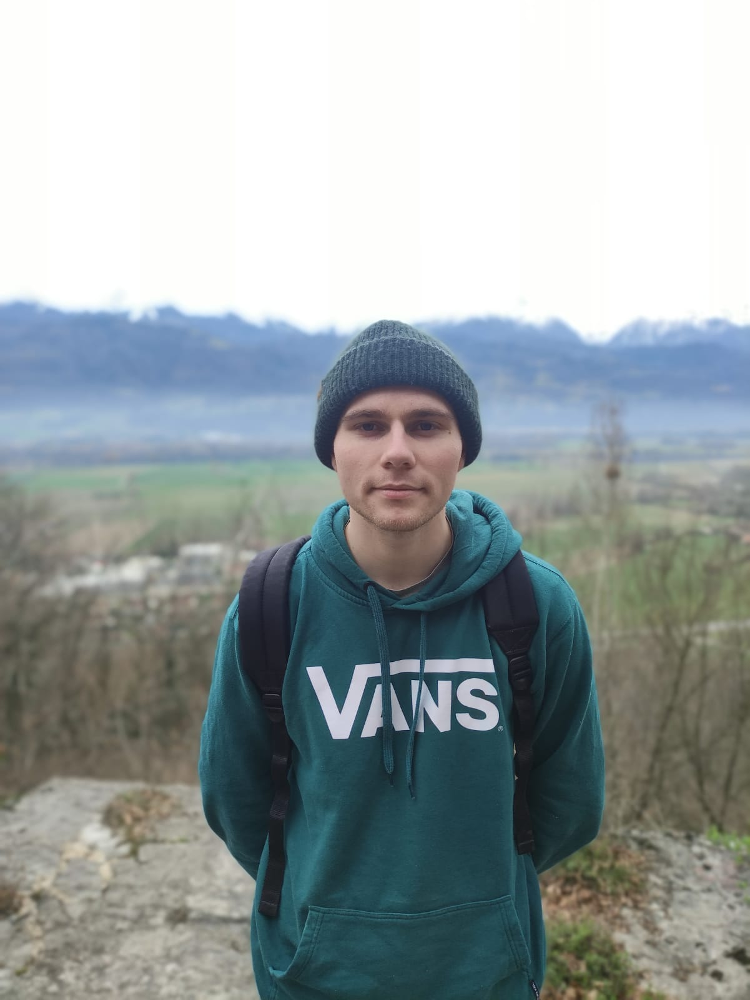

À propos
Je suis en Master 2 MIASHS, parcours Informatique & Cognition, à l'Université Grenoble Alpes, après un BUT Informatique à l'IUT2 de Grenoble.
Pendant mon BUT, j'ai passé 15 mois chez Alpamayo, en stage puis en alternance, sur un logiciel .NET de prévision d'effectifs scolaires utilisé aujourd'hui par 40 collectivités.
J'ai commencé l'informatique enfant, en créant des mods et des maps pour les jeux auxquels je jouais.
- Basé à
- Grenoble (38), véhiculé
- Langues
- Français, anglais B2/C1
- Hobbies
- Escalade de bloc depuis 3 ans, veille quotidienne sur l'IA et les LLM
Projets
-
Simulateur de modèles cognitifs
Application web qui simule des temps de réponse et estime les paramètres de modèles d'apprentissage arithmétique. J'ai développé les interfaces interactives et les graphiques qui permettent aux chercheurs de tester leurs modèles.
Équipe de 3, avec des chercheurs en sciences cognitives.
-
Prévision d'effectifs scolaires
Logiciel métier qui aide les départements et les communes à gérer leurs secteurs scolaires et à prévoir les effectifs des écoles et des collèges. J'ai travaillé sur l'architecture back-end, le traitement des hypothèses de secteurs de recrutement, de nouvelles fonctionnalités et des corrections de bugs.
Équipe Agile de 6 développeurs. Déployé dans 40 collectivités.
-
Portail familles
Maquettes d'un portail où les parents inscrivent leurs enfants à la restauration scolaire, au transport et à la garderie. Travail en autonomie, sous la supervision de la responsable produit.
Binôme avec la responsable produit.
-
Site de vente aux enchères
Site d'enchères en programmation concurrente. J'étais responsable du front-end, réalisé à partir de maquettes imposées.
Équipe de 6.
Parcours
-
2025 – 2027
Master MIASHS, Informatique & Cognition
Université Grenoble Alpes, M2 en cours
-
janv. – juin 2026
Développeur full stack, stage de M1
Université Grenoble Alpes, projet tuteuré
-
2023 – 2024
Développeur full stack .NET
Alpamayo, Grenoble. Stage puis alternance, pendant le BUT, 15 mois.
-
2021 – 2024
BUT Informatique, parcours Réalisation d'applications
IUT2 Grenoble
Compétences
- Langages et back-end
- Java, C# (.NET), C++, Python, PHP (Laravel), Node.js (Express), API REST
- Front-end
- JavaScript, TypeScript, HTML, CSS, Vue.js (Nuxt), Angular, React, D3.js
- Bases de données
- PostgreSQL, MySQL, SQLite, MongoDB
- Outils
- Git (GitHub, GitLab, Bitbucket), Docker, Linux, Jira, Trello, Figma
- Méthodes
- Agile (Scrum), programmation orientée objet, MVC, UML